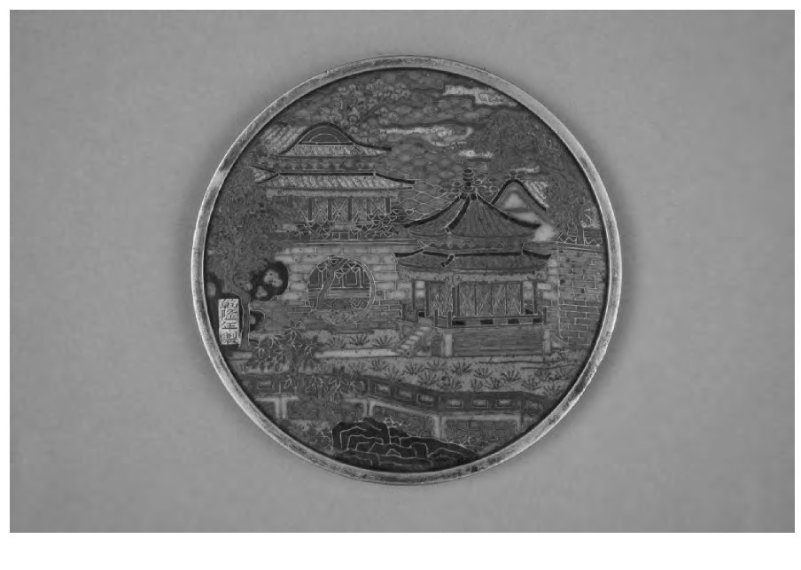
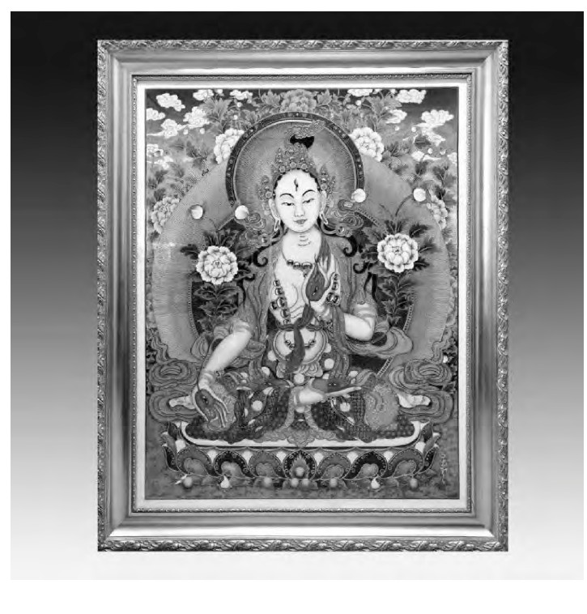

中国掐丝珐琅传承网
中国掐丝珐琅传承网
00
-
00
-
00
中国掐丝珐琅传承网
纵观历朝历代的掐丝珐琅作品不难发现，所有的作品都包含着以下几个特点:首先，它们都具备历史研究的价值;其次，掐丝珐琅成品精美，也具备相当的审美价值;再次，掐丝珐琅不仅仅可以作为艺术品来欣赏，这一技艺也可以和生活完美结合，具有一定的实用价值;最后，作为非遗项目，掐丝珐琅和其他中国特有的艺术品一样，受到了世界的喜欢和认可，具有文化交流价值。
在现有的文物中，掐丝珐琅作品主要集中在元明清三代。元朝时期的掐丝珐琅色彩已纯色为主、分布均匀，色调鲜艳明快，花纹比较单一，多以圆形缠枝莲为主，掐丝手法熟练，但镀金效果官民有差、厚薄有别。明朝时期的掐丝珐琅图案、色彩都逐渐丰富起来，掐丝手法也愈发娴熟，可以看出制作者在灵活地运用不同粗细丝的特点，以适应图案造型的需要。而清朝时期的掐丝珐琅作品因大多是以内廷生产为主，所作成品多体现的是统治者的喜好，十分的规矩、庄重。元明清三代虽各有特点，却又有着千丝万缕的联系，后朝总是延续着前朝的优点，并不断改进创新，从而将掐丝珐琅工艺从不知出处的民间手艺一步步打造成了连皇室贵族和海外游客都赞不绝口的高级奢侈品。如今，掐丝珐琅作为历史遗留下来的瑰宝，默默展示着中国从明朝开始至今的许多历史故事，不同时期的掐丝珐琅所体现的绝不仅仅是作品本身的特点，更是在记录当时社会形态。就像元朝时期的圆形缠枝莲本就是在承接宋朝，可见宋朝文化的影响源远流长。再如，明朝时期之所以官民共同发展掐丝珐琅工艺，正是由于当时统治者为了稳定民心、恢复生产而释放了大量元朝手工业奴隶为民，这才使得掐丝珐琅工艺也能够在寻常百姓之间得以继承和发展。
学习一项传统工艺绝不是单纯地在模仿前人的手法，每一项传统工艺背后都有着对应的历史背景故事。通过对各个时代掐丝珐琅作品特点的整理，可以从中寻找出其兴衰的原因所在，从而结合当代现状，总结出符合实际的传承方案。
整理掐丝珐琅的历史不难看出，不同时期的掐丝珐琅所呈现出的艺术效果也是不一样的。但不论是哪个时代下的产物，它的出现一定都代表着当时大众的审美标准。
实际上，古人在制作之时，也早已考虑到了掐丝珐琅的审美特点，并加以灵活运用。掐丝珐琅特有的以丝代线的表现手法，常常可以让一幅再平常不过的图画变得晶莹剔透，别具一格。如，乾隆时期的掐丝珐琅山水楼阁图铜镜(如图1所示)，制作者用丝做线条，勾勒出山水和楼阁的样貌，再添加上色彩艳丽的珐琅彩，画中铜丝铜镜相呼应，使得整幅画面仿佛是从铜镜中溢出来的一般，呈现出人间仙境般的景象。
掐丝珐琅的美是含蓄的、内敛的，其做工复杂，环环相扣，每一步都迫使制作者足够耐心和仔细，容不得出现半点差错，可能只是金丝间的半毫米小缝隙便能使整幅作品毁于一旦。其苛刻的特性，促使能够问世的成品都是不容置疑的佳作。
如今，掐丝珐琅在制作风格上虽稍有变革，但是其体现出的艺术感只多不少，越来越多的人喜欢将掐丝珐琅工艺作为精美的装饰品来搭配不同的家具服饰，从而为自己的生活增添别具一格的艺术氛围。
掐丝珐琅是没有造型限制的，这一点在目前的故宫馆藏中就已经显而易见了。大到鼎、炉、屏风，小到杯、碗、烛台，仿佛任何一个生活用品都可被掐丝珐琅装饰。事实也确实如此，由于胎丝一般是以金、银、铜等材料制成，质地柔软易变形，所以这种掐丝的手法并不局限于一个平面，它和绘画一样可以绘制在弧面和立体的物体上，这就大大地增加了掐丝珐琅的使用范围。可以说，掐丝珐琅是难得的具有丰富实用价值的传统工艺，不像刺绣通常只用于服饰、剪纸大多应用于平面装饰等，在生活中的任何一个角落都可以出现掐丝珐琅的身影。而且这项艺术本身又具有极强的包容性，如，当下正流行的掐丝唐卡便是一个巨大的亮点。传统的唐卡往往是绘制在经过处理的棉布上，先勾勒线条，然后进行着色。而掐丝唐卡在传统唐卡的图案特点基础上，结合了掐丝珐琅的制作手法，所作成品格外的华贵高雅、富丽堂皇。金属丝的添加使得图案可以更清晰地展现，线条显得更加流畅，给人一种光彩夺目之感。
因此，掐丝珐琅不仅本身可以称作为一件艺术品，它也可以和其他工艺相结合，碰撞产生出全新的火花。它是一门艺术，也是一个充满着利用价值的审美符号，可以随意塑造、创新，从而充盈人们的生活。
掐丝珐琅的历史神秘、审美新颖、应用广泛又直接指向了它的另一个特性，即掐丝珐琅具有极强的文化包容性。
关于掐丝珐琅的源头在历史上一直是一个谜团，由于早期的历史文献资料不足，且并没有早期的景泰蓝作品作为依据，专家学者在掐丝珐琅来源这个问题上一直没有形成一个确定的看法。在金开诚主编、王忠强编著的《景泰蓝》一书中便提到了，景泰蓝的源头主要有两种不同的说法，一部分学者认为景泰蓝起源于我国，还有一部分学者认为珐琅器是从外国传入我国的。另外，根据明朝王佐的《新增格古要论》一书记载:“‘大食窑’:大食窑器，出源缺。随着铜体，药物各色鲜花被解雇，而佛郎嵌相似。”可见景泰蓝、大食窑、佛郎嵌有着异曲同工之妙，由此可大胆推断掐丝珐琅实际上本身就是中西文化交融的产物。
相较于普通的工艺品，掐丝珐琅有着浓厚的绘画成分，装饰性极强。装饰画不同于写实画，它注重形式美，而不是光影效果和透视效果，恰巧与掐丝珐琅的特性相吻合。掐丝珐琅在制作过程中因彩釉实际材料多为天然矿石，无法融合调色，所以大多会省略一些物体的明暗关系，这就使得掐丝珐琅工艺制作出的成品本身就充满了浓郁的装饰画韵味。如今中国绘画受西方现代主义和后现代主义影响颇深，画面多呈现抽象、虚无等特点。而掐丝珐琅也恰恰可以利用其抽象、概括的装饰特点，找到一个与世界文化相结合的完美契合点，并尝试和其他综合材料相结合，发展成符合时代的国际性的工艺品艺术。实际上，现如今，已经有越来越多的工艺美术家在尝试对掐丝珐琅加以创新和改造，在景区、工艺品市场、购物网站等售卖点皆可以看到画面唯美、内容新颖却又不失传统的掐丝珐琅工艺品，虽然可能工艺技术存在着高低之分，但不难看出国民都在用心传承中国传统文化，并努力开拓创新、与时俱进。
掐丝珐琅作为中华传统文化之一，其历史价值奠定了它深厚的文化根底，审美和实用价值又证明了它的前途无量，而掐丝珐琅强大的文化包容性更是体现出了它理应被传承的意义所在。
习近平总书记曾特别强调过要“推动中华优秀传统文化创造性转化、创新性发展，不断提高人民思想觉悟、道德水平、文明素养，不断铸就中华文化新辉煌”。掐丝珐琅作为中国著名的传统文化之一，是值得人们为其继承和发展付出努力的，想要将这一艺术瑰宝长存，那就必须开拓创新，用新鲜的时代精神浇灌，让古老的技术镀上新时代的绚丽色彩。
然而可悲的是，掐丝珐琅在发展过程中并非一帆风顺，在历史记载中可以发现，景泰蓝工艺曾几度面临着断代失传的风险。自古改朝换代定会影响文化的发展，掐丝珐琅也一样，清初的“跑马圈地”和民族歧视政策，破坏了生产，也影响了掐丝珐琅的发展。好在康熙之后社会再次繁荣起来，掐丝珐琅才得以复兴。掐丝珐琅的低调奢华之美，使得康熙、乾隆等历代皇帝爱不释手，为此特意创立内廷造办处，专门培养工匠制作掐丝珐琅工艺品。可惜也是因为清时期的掐丝珐琅大多都是宫廷制造，封建制度的瓦解才会再一次打击到了它的存在。不得不承认，最精良的景泰蓝工艺已经随着宫廷造办处的取缔而消亡，毕竟民间工坊的制作技术和宫廷还是有着天壤之别的，掐丝珐琅在近代历史中陷入了断代的危险，如若放任不管，这项无与伦比的宝藏工艺便会彻底灭绝，后人也再没有机会去亲临掐丝珐琅的美，学者也更难去追溯掐丝珐琅背后的历史脉络。直到1949年后，这一度兴衰险些灭亡的古老技艺在国家的扶持之下才得以恢复，重获新生。2006年，景泰蓝工艺技术于被纳入中国第一批国家级非物质文化历史遗产保护名录，至此，这颗历史遗留下来的明珠，才终于被搬上了宝座，得到了可以被传承的认可。由此可见，掐丝珐琅的发展是与国家发展息息相关的，自然对其的传承需要国家的大力支持，除此之外，更需要民族的认可。只有国家和人民都认识到了掐丝珐琅的价值，才能上下齐心，更好地发展这项精美的传统工艺。
值得庆幸的是，如今在习近平总书记的引导下，越来越多的人民意识到了传承中国传统文化的重要性，陆陆续续的有许多国学书院、传统文化培训课程在全国各地展开，与此同时，也有很多民间艺术大师在默默地继承和弘扬中国掐丝珐琅技术。如，“中国景泰蓝第一人”张同禄，其作品《故宫六珍》《喜凤瓶》等，都曾作为国礼分别赠送给了非盟主席和韩国总统，充分彰显了大国风姿，同时，也为中国和世界的友好和平建交做出了一定的贡献。在20世纪80年代初，张同禄大师为自己开发的“铂晶画”全新技术申请了专利(如图2所示)。铂晶画的问世，使得景泰蓝技术开始应用于壁画、屏风等工艺品之中，使景泰蓝更大限度地发扬光大。而后人在此基础上又继续发展，用粗细不同的金属丝当作画笔描绘线条，用天然彩石磨成的粉末作为填充的颜料，以此创作出了景泰蓝中国彩嵌工艺画(彩砂画)，彻底简化了景泰蓝的制作过程，突破了其在制胎材料上的局限性，既弘扬了中国的传统手工艺，又将这项艺术完全地融入生活，走向世界。
传承掐丝珐琅的意义是重大的，是刻不容缓的。掐丝珐琅是一项可以作为国礼推广到世界的惊世之作，可这项工艺技术在我国却还处于鲜为人知的境地，甚至还有人因掐丝珐琅工艺的复杂程度而放弃对其的学习和继承。为此，需要传统工艺者制作更多更亲民、更精美的工艺作品，同时，也可以利用当下正流行的新媒体艺术将这项传统文化以最直观、最现代化的方式呈现在广大人民群众面前，这样才可以让越来越多的人了解到掐丝珐琅的价值，从而主动继承和发展这一项优秀的中国本土文化。
综上所述，掐丝珐琅其蕴藏的价值之大足以体现出了传承的意义所在。但是传承掐丝珐琅不仅仅是在模仿前人的手艺，更重要的是谈古论今，吸取前人的经验和教训，将优良的传统发扬光大，将糟粕之处加以修改并创新利用。为防止掐丝珐琅再次衰落，作为新时代的青年也必须以身作则，积极主动地投入到维护中国掐丝珐琅工艺的队伍中来，为弘扬中国传统工艺尽一份绵薄之力。